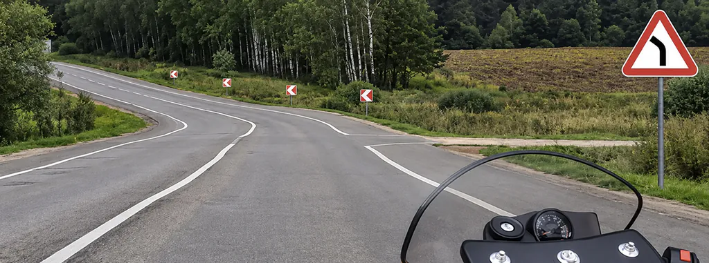
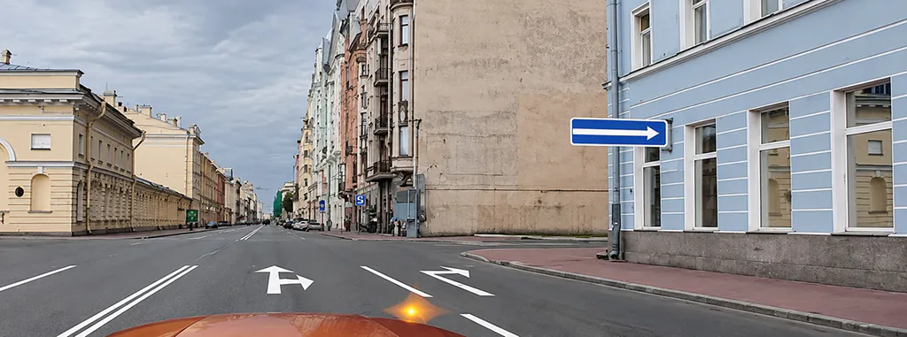
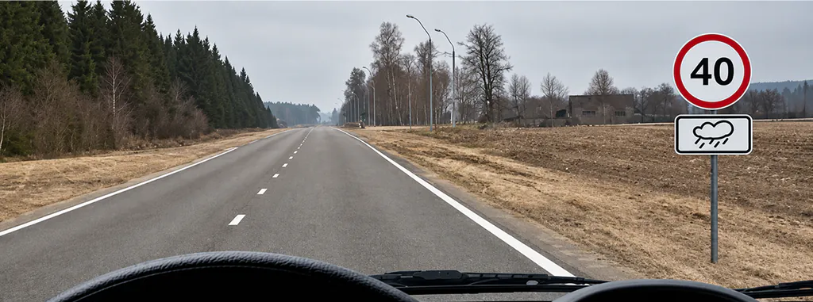

Как читать рисунок в билете ПДД: три разбора с картинками

Рисунок в билете ПДД нужно читать вместе с вопросом: сначала определить своё действие, затем собрать условия и только после этого сравнивать ответы. Один заметный знак не обязательно решает задачу. Значение могут изменить табличка, стрелки по полосам, работающий светофор или тип транспортного средства.
Разберём три настоящих вопроса A/B, в которых решение зависит от разных визуальных деталей. Это учебная подборка, а не список «самых сложных вопросов» по статистике. Номера и изображения приведены, чтобы вы могли найти оригинал и проверить рассуждение.
Порядок чтения: пять шагов
- Прочитайте вопрос. О чём он: направлении движения, обязанности уступить, скорости или возможности остановки? Слова «можно» и «обязаны» требуют разных ответов.
- Найдите себя. С какой стороны вы подъезжаете, в какой полосе находитесь, куда собираетесь двигаться? Не назначайте себе траекторию, которой нет в условии.
- Соберите регулирование. Светофоры, регулировщик, знаки, таблички, разметка. Читайте знак вместе с тем, что расположено под ним.
- Проверьте остальных участников. Кто движется, кто меняет направление, чьи пути важны для вашего действия?
- Сопоставьте варианты. Выберите тот, который полностью соответствует найденным условиям, включая ограничения вроде «только» или «во всех случаях».
Это порядок анализа, а не новая норма ПДД. Он не отменяет необходимости знать сами правила. Если символ на рисунке незнаком, сначала откройте справочник: угадывать его значение по общему настроению картинки бесполезно.
Пример 1. Поворот дороги не означает запрет другого поворота

Разрешен ли Вам поворот на дорогу с грунтовым покрытием?
- Разрешен
- Разрешен только при технической неисправности транспортного средства
- Запрещен
Проверить ответ
Верно: Разрешен.
В билете 1, вопросе 2, заметен предупреждающий знак 1.11.2 «Опасный поворот», а на закруглении стоят знаки направления поворота. Они помогают увидеть конфигурацию дороги. Но спрашивают не о том, куда изгибается асфальт, а о возможности повернуть на грунтовую дорогу справа.
Не превращайте предупреждение в предписание. Изображённые знаки не запрещают указанный поворот, поэтому ответ базы — «Разрешен». Формулировка «только при неисправности» добавляет условие, которого для разрешения этого манёвра в задаче нет.
Проверьте ход мысли: «Я видел стрелку, значит, надо двигаться только по ней» — слишком широкая догадка. Сначала назовите группу и значение конкретного знака. Предупреждающий знак и предписывающий знак направления движения выполняют разные задачи, даже если на обоих нарисована стрелка.
Пример 2. Общее правило уточняется разметкой

Как Вам следует поступить при повороте направо?
- Перестроиться на правую полосу, затем осуществить поворот
- Продолжить движение по второй полосе до перекрёстка, затем повернуть
- Возможны оба варианта действий
Проверить ответ
Верно: Возможны оба варианта действий.
В билете 1, вопросе 8, автомобиль находится во второй полосе. На покрытии видны стрелки 1.18: направо разрешено двигаться с обеих попутных полос. Поэтому можно заранее перестроиться вправо и затем повернуть, а можно выполнить поворот из занимаемой полосы. Вариант базы — «Возможны оба варианта действий».
Если остановиться на общем воспоминании «направо только из крайнего правого положения», легко пропустить уточнение пункта 8.5 о случаях, когда иной порядок определён знаками или разметкой. В этом рисунке именно стрелки по полосам меняют решение. Разметку нужно не просто заметить, а связать с вашей полосой.
Из ответа не следует, что перестраиваться можно без проверки соседей или что при повороте разрешено произвольно пересекать чужую траекторию. Возможность поворота из полосы и безопасность выполнения манёвра — разные вопросы. Здесь проверяется выбор разрешённого варианта действий при показанной организации движения.
Пример 3. Табличка описывает покрытие, а не только погоду

Вам необходимо двигаться со скоростью не более 40 км/ч:
- Только во время дождя
- Во время выпадения осадков (дождя, града, снега)
- Во всех случаях, когда покрытие проезжей части влажное
Проверить ответ
Верно: Во всех случаях, когда покрытие проезжей части влажное.
В билете 3, вопросе 3, под ограничением 40 км/ч стоит табличка 8.16 «Влажное покрытие». Она связывает действие знака с состоянием поверхности. Поэтому условие не ограничивается моментом дождя или выпадения осадков. Дождь мог закончиться, а покрытие оставаться влажным.
Верный ответ базы — «Во всех случаях, когда покрытие проезжей части влажное». Здесь решающая деталь находится ниже крупного знака. Нельзя сначала ответить на знакомую цифру, а затем мысленно отбросить табличку как оформление.
При этом табличка не позволяет игнорировать общие требования к выбору безопасной скорости. Число на знаке — ограничение в обозначенных условиях, а не команда обязательно ехать именно 40 км/ч. Если задача спрашивает только, когда действует данный знак, отвечайте именно на неё.
Что не нужно додумывать
Не придумывайте скрытую машину за пределами кадра, не приписывайте автобусу маршрутный статус только по кузову и не заменяйте нарисованный сигнал тем, который «обычно горит на таком перекрёстке». Используйте данные условия и признаки, которые предусмотрены правилами. Нехватка видимой информации в реальном движении требует осторожности; билет решается по заданной учебной ситуации.
Если изображение слишком мелкое, увеличьте его штатным способом и проверьте детали. Если оно повреждено или не соответствует тексту, отправьте сообщение об ошибке с категорией, номером билета и вопроса. Заучивание случайно восстановленной по памяти картинки закрепляет сомнение, а не знание.
Как проверить, что вы читаете условия, а не узнаёте картинку
После ответа закройте варианты и назовите один признак, без которого решение было бы другим: предупреждающая группа знака; стрелка в вашей полосе; табличка влажного покрытия. Затем найдите в теме похожую задачу и заново проделайте пять шагов. Не меняйте условия оригинального билета, выдавая собственную версию за экзаменационный вопрос.
Расшифровка линий приведена в разборе дорожной разметки, группы знаков — в справочнике знаков. В PDD Drive можно перейти от отдельного билета к соответствующей теме и проверить новый пример. Следующее занятие начните с той детали, которую сегодня пропустили.
Источники и проверка
Откройте свою категорию и перед ответом назовите действие, регулирование и решающее условие.
Частые вопросы
Сначала читать вопрос или смотреть картинку?
Сначала прочитайте, о каком действии спрашивают, затем рассмотрите рисунок. Так проще отличить существенные условия от деталей, которые не относятся к вопросу.
Можно ли определить ответ по одному дорожному знаку?
Только если остальные условия действительно ничего не меняют. Проверяйте таблички, сигналы, разметку, свою полосу и участников, с которыми связано ваше действие.
Что делать, если картинка отличается от знакомого билета?
Проверить категорию, номер и все условия заново. Похожий фон не означает одинаковое правило или ответ.
Почему после дождя может действовать знак с табличкой «Влажное покрытие»?
Табличка 8.16 относится к состоянию покрытия. Если оно остаётся влажным, условие её действия сохраняется и после окончания дождя.